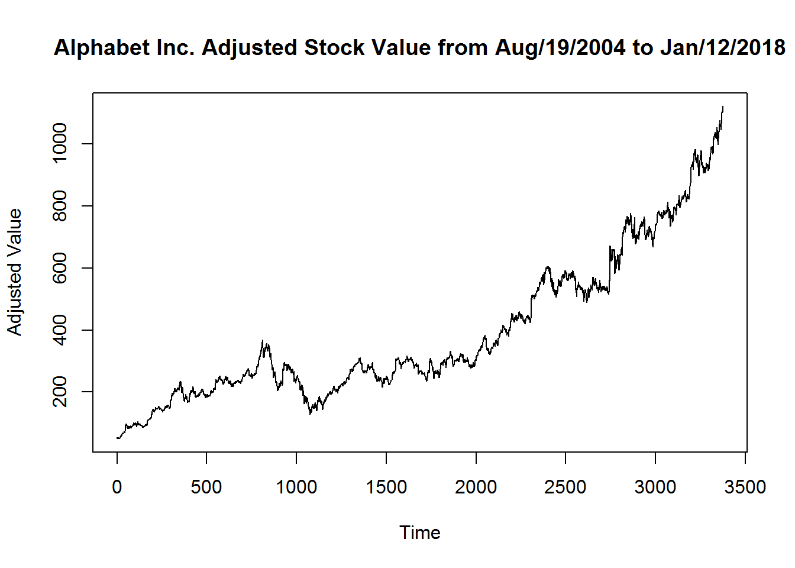
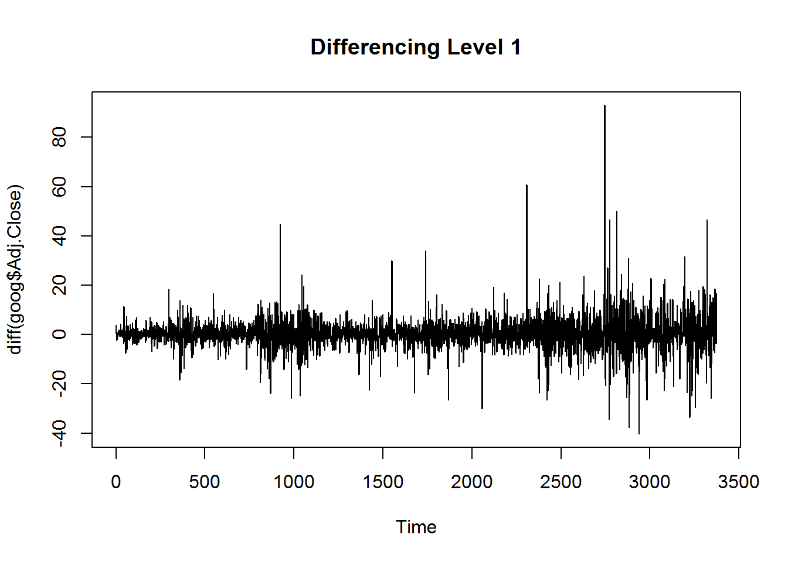
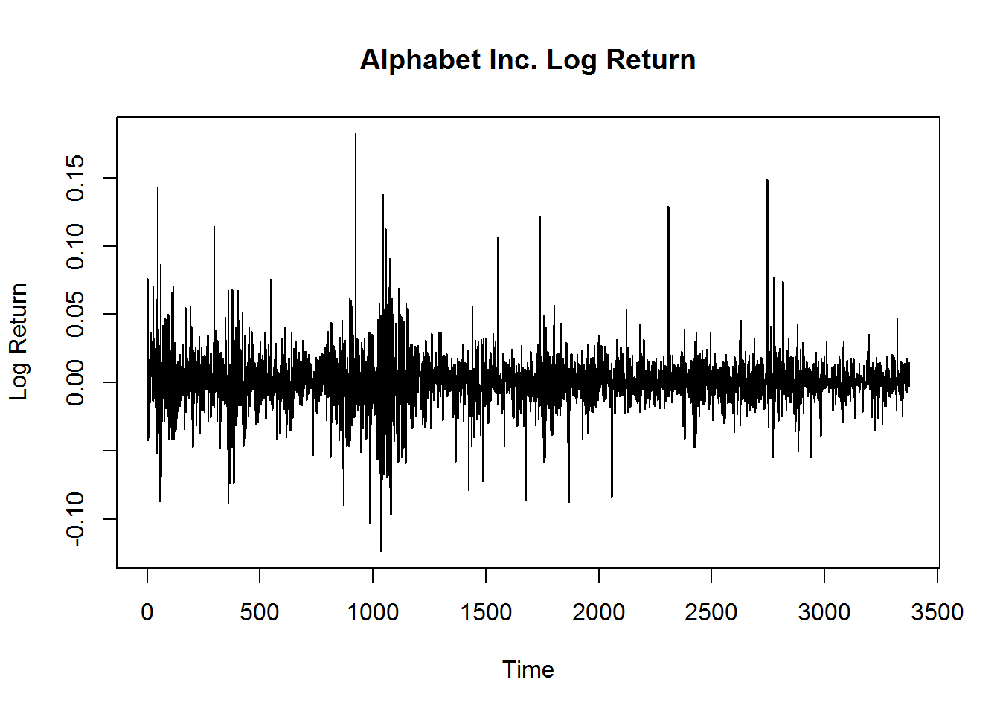
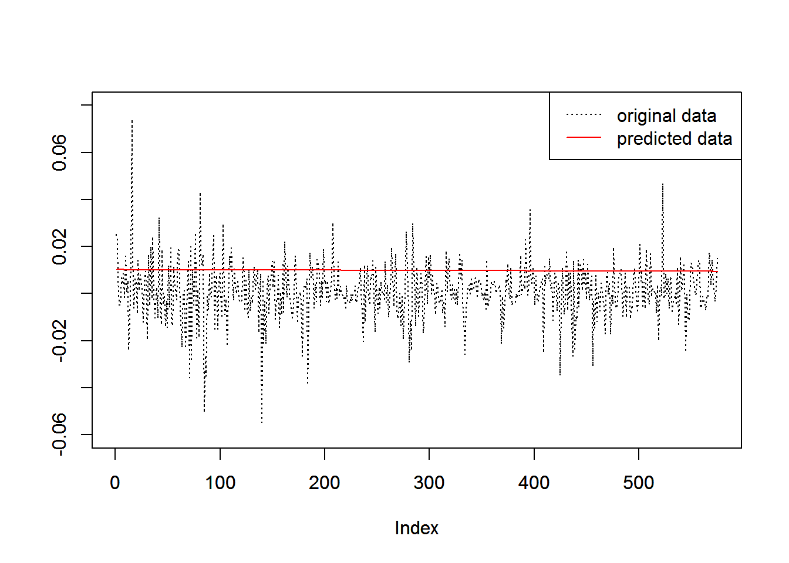
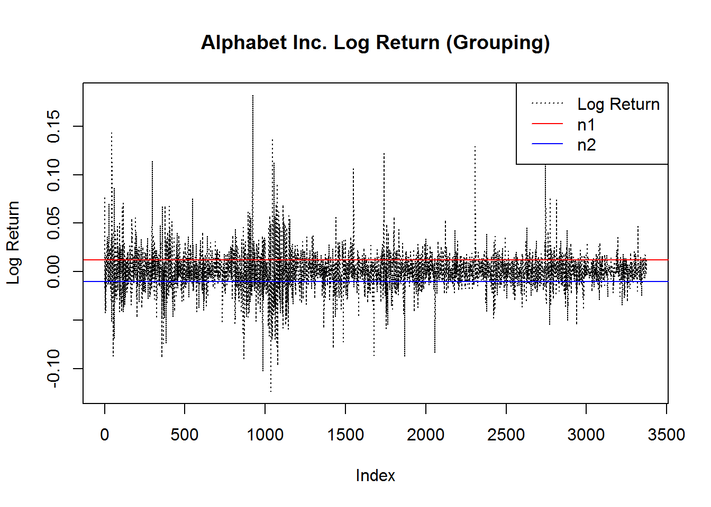

\[\hat{r}_{t}=\mu_{t}+\sigma_{t}\cdot\epsilon_{t}\] We have:
AR(1) \[\hat\mu_{t}=a_{t-1}+b_{t-1}\cdot\mu_{t-1}\]
GARCH(1,1) \[{\hat\sigma_{t}}^2=\omega_{t-1}+\alpha_{t-1}\cdot{\mu_{t-1}}^2+\beta_{t-1}\cdot{\sigma_{t-1}}^2\]
Therefore, \[\hat{r}_{t}=\hat\mu_{t}+\hat\sigma_{t}\cdot\epsilon_{t}=(a_{t-1}+b_{t-1}\cdot\mu_{t-1})+\sqrt{\omega_{t-1}+\alpha_{t-1}\cdot{\mu_{t-1}}^2+\beta_{t-1}\cdot{\sigma_{t-1}}^2}\cdot{\epsilon_{t}}\]
#read local data
goog=read.csv("C:/Users/thinkpad/Documents/GitHub/dalu0511/Project Files/FM Research/GOOG.csv")The original data has 7 columns: Date, Open, High, Low, Close, Adj.Close, and Volumn.
Day and Log.Return (\(r_t\)) are added to the data frame. \[r_t=\ln(\frac{P_t}{P_{t-1}})\] where \(P\) represents adjusted close value.
#load package: fGarch
library(fGarch)#plot the adjusted value
plot.ts(goog$Adj.Close,ylab="Adjusted Value",main="Alphabet Inc. Adjusted Stock Value from Aug/19/2004 to Jan/12/2018")
plot.ts(diff(goog$Adj.Close),main="Differencing Level 1")
#compute log return value
l=dim(goog)[1]
goog$Day=1:l
goog$Log.Return=NA
for (i in 2:l){
goog$Log.Return[i]=log(goog$Adj.Close[i]/goog$Adj.Close[i-1],base=exp(1))
}#plot the log return value
plot.ts(goog$Log.Return,ylab="Log Return",main="Alphabet Inc. Log Return")
The first \(n\) data (g1) were used for Model, and the rest (g2) were used for back testing.
#divide the date into two groups, the second part is used for back testing
n=as.integer(2800)
#n=floor(l/6*5)
goog$g1=NA
goog$g2=NA
goog$g1[2:n]=goog$Log.Return[2:n]
goog$g2[(n+1):l]=goog$Log.Return[(n+1):l]Using linear model on Rolling Log.Return to compute \(a\) and \(b\), and then \(\hat\mu\).
#compute the value of mu hat
goog$mu.hat=NA
for (i in n:(l-1)){
lm=lm(goog$Log.Return[2:i]~goog$Day[2:i])
a=lm$coefficient[[1]]
b=lm$coefficient[[2]]
mu=mean(goog$Log.Return[2:i])
temp.mu.hat=a+b*mu
goog$mu.hat[i+1]=temp.mu.hat
}
#plot.ts(goog$mu.hat[(n+1):l],main="mu hat",ylab="")Using GARCH model on Rolling Log.Return to compute \(\omega\), \(\alpha\) and \(\beta\), and then \(\hat\sigma^2\).
#compute the value of sigma hat square
goog$sigma.hat.square=NA
for (i in n:(l-1)){
g=garchFit(~garch(1,1),goog$Log.Return[2:i],trace=FALSE)
omega=g@fit$coef[[2]]
alpha=g@fit$coef[[3]]
beta=g@fit$coef[[4]]
mu=mean(goog$Log.Return[2:i])
sigma=sd(goog$Log.Return[2:i])
temp.sigma.hat.sq=omega+alpha*mu^2+beta*sigma^2
goog$sigma.hat.square[i+1]=temp.sigma.hat.sq
}#compute the value of sigma hat
goog$sigma.hat=sqrt(goog$sigma.hat.square)#compute the r hat, and plot the back testing log return value with the r hat value (predicted value)
goog$r.hat=goog$mu.hat+goog$sigma.hat*rnorm(1,0,1)
plot(goog$Log.Return[2801:l],type="l",lty=3,col=1,ylim=c(-0.06,0.08),ylab="")
par(new=TRUE)
plot(goog$r.hat[2801:l],type="l",lty=1,col=2,ylim=c(-0.06,0.08),ylab="")
legend("topright",legend=c("original data","predicted data"),lty=c(3,1),col=c(1,2))
In this model, the Log.Return was divided into two groups: one with relative high volatility and one with relative low volatility.
Method 1: Set a pair of threshold level, \(n_1\) and \(n_2\), where \(n_1>n_2\). In Log.Return data, any value greater than \(n_1\) or less than \(n_2\) would be put into group High, and the left would be put into group Low.
#find the thresholds, plot out the graph
n1=mean(goog$Log.Return[2:l])+0.02
n2=mean(goog$Log.Return[2:l])-0.02
count=0
while (count<l*0.4){
count=0
for (i in 2:l){
if (goog$Log.Return[i]>n1|goog$Log.Return[i]<n2){
count=count+1
}
}
if (count<l*0.4){
n1=n1-0.001
n2=n2+0.001
}
}
print(count)## [1] 1375plot(goog$Log.Return[2:l],type="l",lty=3,ylab="Log Return",main="Alphabet Inc. Log Return (Grouping)")
abline(h=n1,col="red",lty=1)
abline(h=n2,col="blue",lty=1)
legend("topright",legend=c("Log Return","n1","n2"),col=c("black","red","blue"),lty=c(3,1,1))
#get the data of group high and group low
High=c()
Low=c()
for (i in 2:l){
if (goog$Log.Return[i]>n1|goog$Log.Return[i]<n2){
High=c(High,goog$Log.Return[i])
}
else{
Low=c(Low,goog$Log.Return[i])
}
}